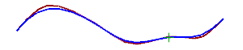

返回到编辑曲线参数 (原有)对话框，并选择上方的样条。
在编辑样条对话框中，点击更改刚度。
一条警告信息出现，提示这个操作将从样条中删除定义数据和关联尺寸。
点击是。
样条的当前阶次为3，您将要增加它的阶次来使样条变硬。
在更改刚度对话框的阶次输入框中，键入7并点击确定。(译者注：NX 8.5中此处译为度，应当是错误的)
可以看出它现在更加平坦。
在对话框中，点击撤销以将样条返回到它原来的形状。
点击更改刚度。
这一次您将减少样条的刚度。
点击是。
在阶次输入框中，键入2并确定。
减少阶次将降低曲线刚度，允许它更贴近控制多边形。
